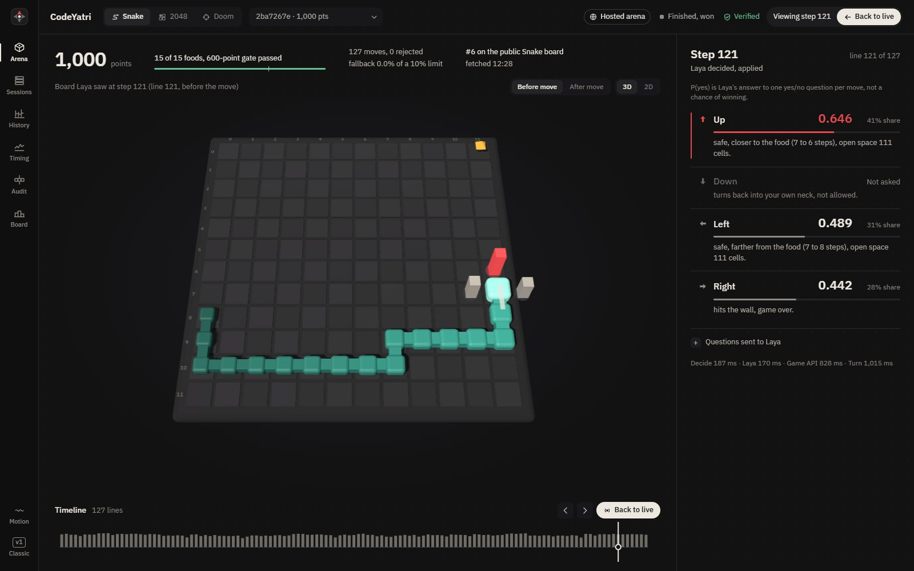
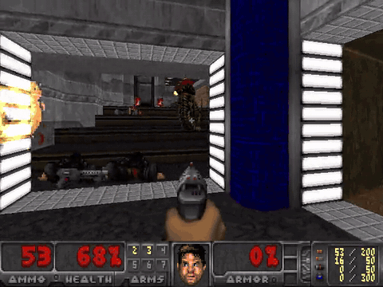
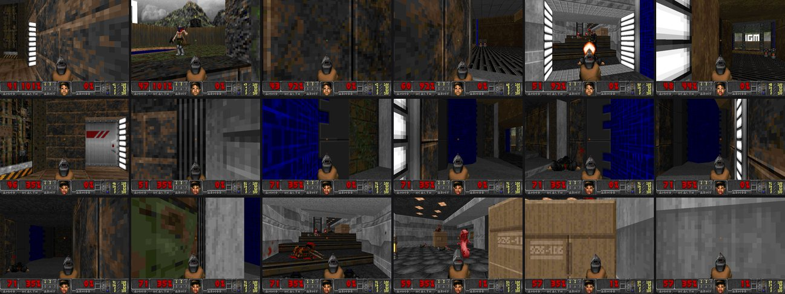
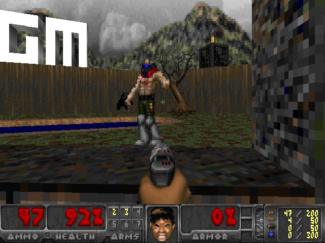
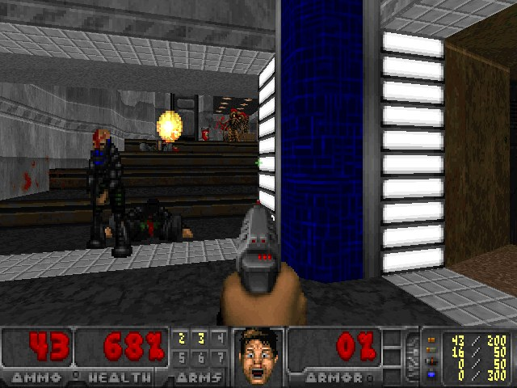
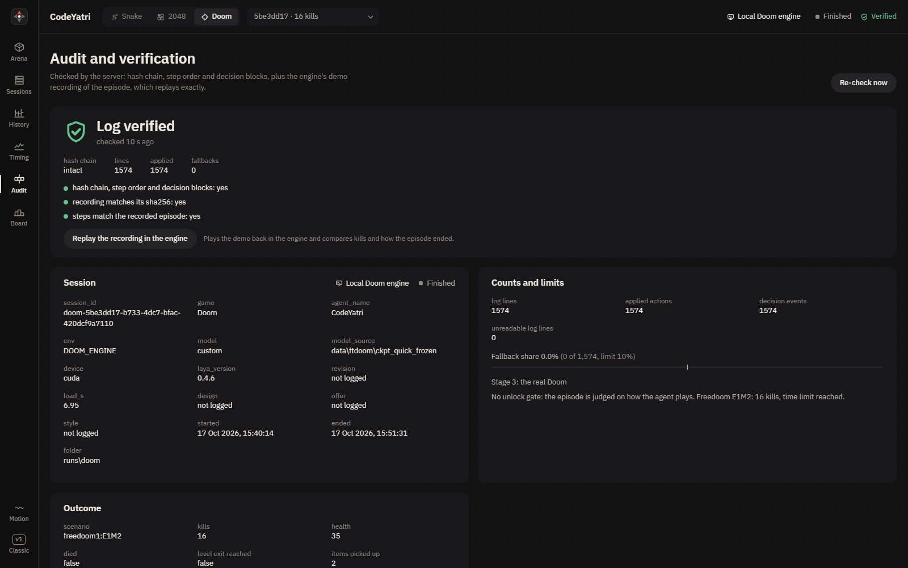

In September I read a Medium post about a small, free decision model that, in its author's words, "can even play Doom(ish)". A month later I had the chance to build my own version on the real Doom engine, with one strict condition: every single action had to be that model's own answer. This post is the full technical story of how I did it: how the game is described to the model, the dataset I built to train it, the mistakes, and the one tactic that took it from dying in under a minute to surviving whole levels.
In short
- The model never sees a pixel. My code reads the Doom engine's internal state and writes one plain sentence per possible action. The model, Laya, answers one yes/no question per action, and the action with the highest "yes" is played.
- No search and no overrides. No path planner, no lookahead, and no hand-written rule that takes control. When the player got stuck, I fixed what the model reads, not who decides.
- A dataset built from written priorities. 7,120 decisions and 64,248 labelled yes/no questions from offline games on 17 levels and 8 training scenarios, labelled by a fixed reading of the stated priorities.
- The student beat its teacher. After 52 minutes of fine-tuning on a free GPU, Laya scored 196 kills on 11 fixed test games, against 51 untrained and 163 for the rules that labelled its data.
- One tactic changed the score: fire at a close enemy while stepping away from it. Best game: 16 kills on level E1M2, alive after the full 3 minutes, 1,574 of 1,574 actions decided by Laya.
What I read, and what it made me want to try
The post was Christian Graham's "Laya: a free, local alternative to Jev, and it can even play Doom(ish)", published on 18 September 2026. In summary:
- He went looking for a free, open-source alternative to Jev, which had just launched, and found Laya. In a published benchmark table he came across, Laya was about ten times faster than Jev and slightly more accurate.
- Laya is not a large language model. It has 421 million parameters, scores every option in a single pass and returns a probability for each one, without generating any text. It is open source, runs on his own Mac, and comes from Convai Innovations.
- Its sweet spot is fast, cheap, calibrated "pick one" decisions: routing support tickets, flagging risky content with a confidence score, deciding which cases need a human, and classifying data that must stay on-premises.
- He taught it to play Doom because a messy, partly visible game level tests things a benchmark table cannot.
- Shooting: in his early tests Laya never fired. Asking one focused yes/no question ("should I shoot?") fixed that, with extra checks against firing without ammunition or at enemies out of the line of fire.
- The safety net: he added rule-based overrides for spinning in corners, oscillating between two moves, and dying without turning to face an enemy. Each override is logged.
- Finding the way out was still unsolved. The player circled rooms it had already cleared. He measured its turn rate to aim it at unexplored space and added door and wall probing and a wall-following fallback. It explored better but had not found a level's exit.
Three things in that post stayed with me:
- One focused yes/no question fixed shooting. What if every action got its own yes/no question, answered side by side?
- The safety net worked, but every override is a decision the model did not make. Could the failures be fixed in what the model reads instead, so that no override is needed at all?
- Could training make it better? Could fine-tuning on a dataset built from written priorities make it play well, and could I measure by how much?
I also wanted the real Doom engine with its real levels, and a way to prove afterwards exactly what was played.
The chance came a month later. At the Genesis 2.0 hackathon, the problem statement "Beat the Bot: Teach Laya to Play", created by Shivam Mishra, asked for exactly this: a bot in which every move comes from a visible, logged Laya call, with no other AI model, no search and no hidden planner. A rule-based fallback was allowed for at most 10% of moves, and only if logged. The stages were Snake, 2048 and, as the final stage, the real Doom. I built it with my teammates Piyush Shukla, Mayuresh Sarkale and Vidushi Singh. This post covers the method and the Doom stage in depth.
Laya, in plain words and in detail
Laya works like a very fast examiner. You show it a situation and a list of yes/no questions, and it answers all of them at once, each with a confidence between 0 and 1. It never writes sentences of its own.
Technically, Laya is built on a ModernBERT-large encoder with 421 million parameters. It is non-autoregressive: it does not produce an answer word by word, as a chat model does. Each question is encoded together with the state, and one forward pass returns a probability for every answer. For a game that shape is ideal: one forward pass per decision, so the cost of a decision is fixed and predictable, and the answer is a set of numbers you can log and inspect. I used version 0.4.6 from PyPI.
import laya
router = laya.Router(device="cuda")
model = router.register("custom", "data/ftdoom/ckpt_quick_frozen", description="Doom fine-tune")
questions = {
"q_shoot": {"type": "noul", "instructions": "...This action: fires the pistol at the Imp in the crosshair..."},
"q_forward": {"type": "noul", "instructions": "...This action: moves forward: open for 784 units..."},
}
raw = router.predict(state_text, questions, model=model) # one forward pass for all questions
p_yes = {q: raw["answers"][q]["noul"] for q in questions} # "noul" is Laya's yes/no answer typeOne rule shaped the whole design: my code writes facts, never verdicts. "The shot hits the Imp" is a fact the code can compute exactly. "You should shoot" is a verdict. If verdicts leak into the questions, the model becomes a rubber stamp and the decision is really made by my code. Laya does the weighing; the code only describes the world truthfully.
Three measured lessons about asking questions
Before Doom, the first two stages, Snake and 2048 on the TopGameAI arena, taught me how to ask Laya questions. Each lesson came from a measured comparison:
- One yes/no question per option beats one multiple-choice question over all options. Each option gets its own probability from its own fact, so you can see exactly why one option won.
- Leave the option's name out of the question. Removing the direction word raised agreement with the correct move from 0.61 to 0.99. Untrained Laya simply liked the word "right", and the word outweighed the facts.
- Put the priorities in every question. Adding one line of priorities cut fatal picks from 43 in 200 decisions to zero.
With those three, untrained Laya scored Snake's maximum of 1,000 points in all four real arena games we completed, with zero fallback moves.

2048 taught me when to train. Untrained, Laya reached the 512 tile in none of 14 simulated games. A plain program that applied the stated priorities to the same facts reached it in 75% of games, which proved the facts carried enough information and that Laya's reading was the bottleneck. After fine-tuning on 20,311 labelled positions, Laya reached 512 in 19 of 24 games, and our real arena run reached 512 in 586 moves, first on the public 2048 leaderboard on 17 October 2026.
The pattern I carried into Doom: first check that the facts carry the signal, then teach Laya to read them.
Getting the real Doom running
Doom's program code has been free for decades, but its original levels are still sold. I needed a version of the engine that a Python program can control one step at a time, and levels I am allowed to use.
| Option | What it gives | Verdict |
|---|---|---|
| A Doom-like raycaster written in Python | Full control and easy state | Not Doom; the problem statement asked for the actual game |
| A player source port such as Chocolate Doom or GZDoom | The real engine, built for human players | No Python API, no access to monsters or walls, no way to pause per decision |
| ViZDoom | A ZDoom-based engine with a Python API, per-tic control, state buffers and demo recording | Chosen |
ViZDoom began as a bachelor thesis by four students at Poznań University of Technology, under the working name "Vizia". In 2016 Michał Kempka, Marek Wydmuch, Grzegorz Runc, Jakub Toczek and Wojciech Jaśkowski published it as a Doom-based research platform for visual reinforcement learning, which won the best paper award at IEEE CIG 2016 and then hosted the Visual Doom AI Competitions in 2016 and 2017. Today it is maintained by the Farama Foundation under the MIT licence. ViZDoom was designed for agents that learn from pixels; I used it the other way round and read the engine's own state, because Laya reads text.
Freedoom is a complete, free replacement for Doom's game data under a BSD licence. Phase 1 matches Doom 1's episode layout (levels E1M1 to E1M9) and Phase 2 matches Doom II (MAP01 onwards). Conveniently, ViZDoom's Python package ships both Freedoom files inside it, so one install gives you a playable Doom:
pip install vizdoom # version 1.3.2; freedoom1.wad and freedoom2.wad are inside the package
pip install laya==0.4.6 pillowimport os, vizdoom as vzd
g = vzd.DoomGame()
g.load_config(os.path.join(vzd.scenarios_path, "freedoom1.cfg"))
g.set_doom_game_path(os.path.join(os.path.dirname(vzd.__file__), "freedoom1.wad"))
g.set_doom_map("E1M2")
g.add_game_args("+neverswitchonpickup 1") # keep the pistol when a chainsaw is picked up
g.set_labels_buffer_enabled(True) # which pixels belong to which monster
g.set_objects_info_enabled(True) # every object with its position
g.set_sectors_info_enabled(True) # the level's walls, doors and floors
g.set_mode(vzd.Mode.PLAYER) # the engine waits for each decision
g.init()
g.new_episode("run.lmp") # record a demo of the whole episodeTwo ViZDoom features shaped the rest of the design. It runs either in PLAYER mode, where the engine waits for each action, or in ASYNC_PLAYER mode, where the game keeps running at 35 tics per second whatever the agent does. And it records each episode as a .lmp demo file that the engine can replay tic for tic, which later became the proof of every game.
Turning a 3D world into sentences
Laya cannot see the screen, so my code describes it in words: where each monster is, what is in the crosshair, and how far you can walk in each direction.
A module I call the perceiver turns each engine state into what a careful player would say out loud. It builds four things:
- Level geometry from the sectors: walls, doors and ledges. A step up blocks movement only if it is more than 24 units higher, as in the real game.
- Straight-line rays for every movement: how far you get before something stops you, and whether the ground along the way is new or already explored.
- Enemies from the object list and the labels buffer: name, angle, distance, and whether they are in view. An enemy counts as "in the crosshair" only if its label covers the centre of the screen and the angle falls within its collision radius.
- Memory of the player's own play: the ground already explored, the last action, the doors already pressed, and the moves that just stalled against a wall.
Laya chooses among 11 actions: shoot; turn 5° or 30° left or right; turn around; move forward or back; step left or right; and use (open a door). Every decision becomes one state line plus one fact per action. This is decision 426 of my best game, word for word:
Doom. Health 92, armor 0, pistol with 54 rounds, 8 kills. Enemies in view: Imp straight ahead,
811 units; shotgun guy straight ahead, 601 units; Zombieman 4 degrees right, 542 units.
A doom imp ball is flying at you, 703 units away.Doom priorities: shoot an enemy that is in the crosshair, turn to bring the nearest enemy into the
crosshair, dodge incoming fireballs, never waste ammunition, open doors, explore new areas, pick up
health when hurt. Is this a good action now? This action:
shoot 0.818 fires the pistol at the Imp in the crosshair, 811 units away: the shot hits it,
and you back away from the shotgun guy 107 units away as you fire. 54 rounds left.
forward 0.086 moves forward: open for 784 units, into 4 unexplored areas, closer to the Imp ...
turn_left 0.023 turns left 5 degrees: the Imp now in the crosshair moves out of it, 6 degrees off.Nothing in those sentences says "shoot is best". Each sentence states what that action does right now, and Laya decides whether that is good. No sentence looks more than one action ahead, so there is no search hidden inside the facts.
One decision, end to end
Two details are deliberate. The decision is logged before it is played, so a crash can never leave an action without its record. And the highest P(yes) is played exactly as Laya gave it: there is no rule that overrides Laya in Doom, so every logged decision carries the source laya. On a laptop RTX 3050 with 6 GB of memory, one call with up to 11 questions took a median of 190 ms in my best game.
Replacing overrides with facts
when the player got stuck, I did not add a rule that grabs the controls. I added the missing piece of information, so that Laya could see why it was stuck and choose differently.
This is where my approach differs most from a safety net. Each failure I saw in testing was fixed by adding a fact, never by taking a decision away from Laya:
| Failure seen in testing | The fact that fixed it |
|---|---|
| Ping-pong: forward, back, forward, back | The move that undoes the last one says "back where you just came from" |
| Pushing against a wall | A blocked move says "blocked by a wall 20 units away, so you barely move", and the state line says when the player has barely moved for several actions |
| Waiting at a door, or pressing it again and again | The door remembers being pressed: "walks up to the door ahead, which is opening and will be clear in a moment" |
| Circling rooms already cleared | Each move says "into 4 unexplored areas" or "over ground already explored", and when no enemy is in view a 12-direction scan adds "Most unexplored ground: 60 degrees right" |
| Aim swinging past the target | Turns split into 5° for aiming and 30° for looking around, and each says where the enemy ends up: "from 3 to 2 degrees off" |
| Firing at nothing | The shot says "hits nothing and wastes a round" |
The result: zero overrides. In my best game, 1,574 of 1,574 decisions were Laya's own answer. One problem from Christian's post is still open for me too: my player explores and fights well but has never reached a level's exit, because exit switches need their own facts.
Building the dataset
to teach Laya, I recorded thousands of game situations, wrote down for each one which action my stated priorities prefer, and trained Laya on those examples until its answers matched.
Untrained Laya was close to useless at Doom. On a fixed set of 11 test games it scored 51 kills, barely more than random actions (34), and on held-out questions it agreed with the stated priorities only 59% of the time. It fired at empty walls and strafed into blocked corners. The facts were correct; the reading was wrong. As with 2048, the cure was to teach it to read.
Who writes the labels
The labels come from a rule reader: a fixed priority reading of the very same one-step facts. It reads one action at a time and never searches for a path or looks ahead. Each action gets a score:
| Situation | Score |
|---|---|
| A side-step takes you out of an incoming fireball's path | 95 |
| The shot hits the enemy in the crosshair | 90 |
| A turn puts the nearest enemy in the crosshair (or closer to it) | 80 (70) |
| Use opens the door in reach; wait for a door that is opening | 60, 58 |
| Pick up health when hurt; other items when no enemy is in view | 55, 50 |
| Exploring: forward into new ground, then turns toward new ground | 40 and up |
| Undoing the last action; firing at nothing | 3; 0 |
For each decision, the action or actions with the top score are labelled yes and every other action no. Decisions where every action scores the same are skipped, because there is nothing to learn from them.
Which games the data comes from
I wanted a model that reads situations, not one that memorises a level, so the data spans as many places as possible. Every game lasted four minutes of game time:
| Source | Games |
|---|---|
| Freedoom Phase 1, levels E1M1 to E1M9 | 2 each, difficulty rotating from 2 to 4 |
| Freedoom Phase 2, levels MAP01 to MAP08 | 1 each |
| ViZDoom scenarios: defend the center, defend the line, deadly corridor, deathmatch, basic, my way home, health gathering, take cover | 2 to 8 each, 39 in total |
The rule reader played these games itself, with random actions mixed in: at each step there was a 15% chance of starting a short burst of them. Without that noise, the data would only contain the tidy situations the reader steers into; with it, the data also contains recoveries from bad spots. The training and held-out sets never share a game.
{"state": "Doom. Health 89, armor 0, pistol with 107 rounds, 16 kills. Enemies in view: none.",
"questions": {
"q_shoot": {"type": "noul", "instructions": "Doom priorities: ... This action: fires the pistol with no enemy
in the crosshair: the shot hits nothing and wastes a round. 107 rounds left."},
"q_forward": {"type": "noul", "instructions": "Doom priorities: ... This action: moves forward: ..."},
... nine more ... },
"expected": {"q_shoot": false, "q_forward": true, ... }}A second round added the situations Laya itself walks into. I let the first fine-tuned model play, labelled its states with the same reader, and merged them into a 9,000-row set. A model trained only on its teacher's games never sees its own mistakes; round two shows it some.
Why one model works on every level
No fact mentions a level. Walls, doors, angles, distances, enemy names and ammunition read the same on E1M2 as in a combat arena. That, plus data from 25 different levels and scenarios, is why a single checkpoint plays every level and scenario I tried. The test games used different random seeds from the training games, although some test levels also appear in the training data with other seeds.
Fine-tuning on a free GPU
fine-tuning means showing the model the labelled examples again and again, nudging it each time its answer differs from the label, until its answers match.
Training used Laya's own trainer, laya.train.finetune, on Kaggle's free T4 GPUs, so the laptop stayed free for testing:
from laya.train import TrainConfig, finetune
cfg = TrainConfig(
epochs=EPOCHS,
micro_batch=16,
grad_accum=4, # an effective batch of 64 examples
loss="soft-ce",
label_smoothing=0.05,
max_len=256,
...
)| Run | Rows | Epochs | Time | Held-out agreement |
|---|---|---|---|---|
| Untrained Laya | 0 | 0 | 0 | 0.587 |
| Quick (used) | 3,000 | 2 | 52 min | 0.961 |
| Full | 7,120 | 3 | 185 min | 0.953 |
| Round two | 9,000 | 2 | 151 min | 0.963 |
Agreement is the share of held-out yes/no questions where Laya's answer matches the label. The quick model's probabilities were also well calibrated, with an expected calibration error of 0.028: when it said 0.9, it was right about 90% of the time.
One moment from testing shows what training changed. The player was stuck in a corner. Untrained Laya gave the blocked side-step a P(yes) of 0.575 and a shot at nothing 0.538. The quick model gives both 0.024 and walks out through the open way.
I used the quick model although the bigger runs matched it on agreement, because it won where it counts. On the same 11 test games it scored 196 kills, against 162 for the full run and 178 for round two.
Results on 11 fixed games
Every policy played the same 11 games: three of defend the center, two of defend the line, three of deadly corridor, and one each of levels E1M1, E1M2 and MAP01.
Total kills over the same 11 games
Fine-tuned Laya beats the rule reader that wrote its training labels.
| Policy | Total kills | Deadly corridor cleared | Deaths |
|---|---|---|---|
| Random actions | 34 | 0 of 3 | 10 |
| Untrained Laya | 51 | 0 of 3 | 9 |
| Rule reader (writes the labels) | 163 | 2 of 3 | 9 |
| Fine-tuned Laya, quick model | 196 | 3 of 3 | 6 |
The last row matters most. The student beat its teacher: more kills, more corridors cleared and fewer deaths than the rules that labelled its data, with 0% fallback, so every action was Laya's own. A model that only copied the reader could not score higher than it. (Random and untrained were measured on 16 October; the reader and the fine-tuned model were measured again on 17 October with the final code.)
Real time or turn-based: the latency budget
real Doom runs at 35 steps a second. If the model needs a fifth of a second to decide, the monsters get several free steps before every move.
Doom runs at 35 tics per second, so one tic lasts about 28.6 ms. In real-time mode the game never waits. With the GPU shared, each Laya call took about 230 ms, which is 8 tics; with the engine and logging on top, the log shows Laya acting only every 8 to 12 tics. A 5° turn three times a second cannot track a monster that moves every tic.
The numbers were clear. In real time, the quick model scored 2 kills on E1M1 and died at 55 seconds. On the same level in PLAYER mode, where the engine waits for each decision, it scored 12 kills and was still alive at the end of a 90-second check. I made every scored game turn-based, which is also how every test number in this post was measured, and kept real time as an option (--realtime). Making real time competitive means bringing a decision within a few tics: fewer questions per decision, a quantised model, or a faster GPU.
Fire while retreating: the tactic that changed the score
a Demon needs about 15 pistol shots to go down, and it bites at close range. Standing still to shoot it is how you die. Stepping back while shooting keeps it out of reach.
The real-time death on E1M1 taught a second lesson. A Demon got within 50 units. Laya spent eight decisions in a row turning 30° at a time, then fired four pistol shots while the Demon kept biting. In those last decisions one fact sat unused: "moves backward: ... away from the Demon (52 to 90 units)".
The arithmetic explains it. A Demon has 150 hit points. A pistol bullet does 5, 10 or 15 damage, 10 on average, so a Demon takes about 15 hits: 10 with lucky rolls, 30 with unlucky ones. Watching that death in the log, I asked the obvious question: why not move back and shoot at the same time, and if a wall is in the way, step aside instead? Doom allows exactly that, holding the fire key and a movement key in the same tic, and a running player backs away about three times faster than a Demon closes in.
I built it into the shoot action itself. When any enemy is within 160 units, a shot also steps away from the closest one: straight back if that leads away from it, otherwise sideways onto open ground with no other enemy within 60° of that direction. The shoot fact says which, so Laya reads it, and Laya still decides whether to shoot at all.
def _step_away(s: Scene):
near = [o for o in s.enemies if o.dist < CLOSE] # CLOSE = 160 units
if not near:
return None
c = min(near, key=lambda o: o.dist) # the closest enemy, in view or not
def off(act, o): # degrees between this move's direction and the enemy (180 = straight away)
return abs((o.bearing - SIDE_ANGLE[act] + 540.0) % 360.0 - 180.0)
def clear(act):
return (s.rays[act].dist >= BLOCKED * 2 and off(act, c) >= 90.0
and not any(o is not c and o.dist < 300 and off(act, o) < 60.0 for o in s.enemies))
moves = [a for a in ("backward", "strafe_left", "strafe_right") if clear(a)]
return max(moves, key=lambda a: (a == "backward", off(a, c), s.rays[a].dist)) if moves else NoneThe first version stepped away only from the enemy in the crosshair, and on E1M2 that got the player killed: Laya shot an Imp 724 units away while a second Imp clawed it from 54 units, 52° to the left. Stepping away from the closest enemy fixed it. The same game with the same seed went from 11 kills and dead at 53 seconds to 16 kills and alive at the end.
| Setup (quick model, turn-based unless stated) | Level, seed | Kills | How it ended |
|---|---|---|---|
| Real time | E1M1, 0 | 2 | died at 55 s |
| Turn-based, 90-second check | E1M1, 0 | 12 | alive |
| Before the back-off (test suite) | E1M1, 11 | 8 | died |
| With back-off | E1M1, 0 | 8 | alive at 3:00 |
| Back-off from the aimed enemy only | E1M2, 0 | 11 | died at 53 s |
| Back-off from the closest enemy | E1M2, 0 | 16 | alive at 3:00 |

The rule reader improved with it as well: E1M1 went from 8 kills and dead to 12 kills and alive, and one defend the line game from 24 kills to 49. For accuracy: this changed the action layer, not Laya's weights. The dataset builder already plays the back-off, so the next training round will include it.
Watch the full game
This is the 16-kill game on level E1M2, replayed from its own demo recording at real speed, 35 tics per second. Every frame is the engine's replay of what Laya played.
Health 68, armor 0, pistol with 43 rounds, 8 kills. Enemies in view: Imp straight ahead, 987 units; Imp 5 degrees left, 501 units; shotgun guy 6 degrees left, 621 units.
Laya read, for Turn left 5°turns left 5 degrees: the Imp comes closer to the crosshair, from 3 to 2 degrees off.
n/a: not asked (no door in reach, or an action this model was not trained on).
The same game in my dashboard
I built a dashboard to watch Laya play. The clip below shows it stepping through this same game's log: each frame is the screen Laya decided on, its P(yes) for all 11 actions with the sentence behind each one, and the running kills and health. It covers steps 400 to 520, slowed to three decisions per second so the answers can be read. Kills 7 to 12 happen in it, and so do several shots fired while backing away.
Kills and health through the game
Fourteen kills in the first 66 seconds, then two minutes of exploring at a steady 35 health.
What Laya chose across 1,574 decisions
Forward and 30° turns are three quarters of all actions; 184 shots produced 16 kills.
Show the numbers behind these charts
| Action | Chosen |
|---|---|
| Forward | 728 |
| Turn left 30° | 351 |
| Turn right 30° | 207 |
| Shoot | 184 |
| Turn left 5° | 37 |
| Turn right 5° | 32 |
| Use | 18 |
| Step right | 12 |
| Step left | 3 |
| Back | 2 |
Kills by game time (seconds): 1 at 2.0, 2 at 2.8, 3 at 3.3, 4 at 22.3, 5 at 24.5, 6 at 36.8, 7 at 46.1, 8 at 48.0, 9 at 53.1, 10 at 54.8, 11 at 58.0, 12 at 59.2, 13 at 64.7, 14 at 65.9, 15 at 151.6, 16 at 160.7. Health: 100, then 92 at 20.4 s, 68 at 51.4 s, 44 at 58.4 s, 35 from 62.9 s to the end.



Proof, not promises
anyone can claim a score. I made every game checkable: the decision log cannot be edited without breaking it, and the game itself can be replayed in the engine to show the same result.
Snake and 2048 had a referee: the arena server keeps its own record of every game. Doom runs on my own machine, so I built the proof in two layers:
- A hash-chained log. Each line stores the full decision (the state, all 11 questions, every probability and the chosen action) together with
hash = sha256(previous hash + "|" + this line). Change one past action and every hash after it breaks. - The engine's own recording. Every game writes a Doom demo file, and its sha256 fingerprint goes into the final record. Replaying the file in the engine reproduces the same kills and the same ending, tic for tic. The video above is exactly that replay.

Challenges, and how each was solved
Each entry is a real failure from my logs:
- Frozen aim. Laya hovered just off target, turning back and forth. 10° turns were too coarse to aim with, so turning was split into 5° for aiming and 30° for looking around.
- Ping-pong. Forward, back, forward, back. Memory of the last action, of moves that just stalled and of doors already pressed went into the facts, and the reader scores an undo low.
- The chainsaw trap. After picking up a chainsaw, every shot "missed" beyond 64 units, because Doom switches to a new weapon automatically. The game argument
+neverswitchonpickup 1keeps the pistol. - A generous crosshair. The player wasted rounds on enemies it could not hit; one Demon 45° off counted as "in the crosshair". Now the enemy's label must cover the screen centre and the angle must fall within its collision radius.
- Frames going black. The dashboard's live view blinked black and then stopped at step 87. On Windows, reading a frame while it was being replaced raised a file-lock error that killed the saver thread. The thread now retries, and the page loads each new frame off-screen before swapping it in.
- A hash taken too early. The recording's sha256 did not match the file on disk. The engine finishes writing the demo when it closes, so the hash is now taken after closing.
- Lag in real time. Five- to sixteen-second freezes happened when two Laya processes and a browser shared a 6 GB GPU. The fix was one job at a time, and turn-based scoring.
- Ctrl+C. Stopping a game by hand froze it and lost the recording, because Ctrl+C also reaches the engine, which runs as a separate process. Games now end through a time limit only.
What is new in this approach
- The game world as one-step facts. No pixels, no path search, no lookahead: one true sentence per action about what it does right now.
- One yes/no question per action, all in one forward pass. Christian's "should I shoot?" insight, generalised to every action. Each decision comes with a readable reason per option.
- No overrides. Failures are fixed by adding the missing fact, so 100% of actions remain the model's own.
- Labels from written priorities. No human annotation: a fixed reading of the stated priorities labels 64,248 questions, and the fine-tuned student scores higher than that teacher (196 kills against 163).
- A combined action, chosen by geometry. Fire while stepping away from the closest enemy, sideways if a wall is behind, described in the shoot fact so the model weighs it.
- Every game provable. A hash-chained decision log, plus the engine's own replay of the recording.
Limits and next steps
- Train on the back-off. The wording exists in the facts now; another round of data would teach Laya to weigh it rather than inherit it.
- Reach the exit. Exit switches need their own facts.
- Make real time competitive. Fewer questions per decision, a quantised model and a server GPU would bring each decision within a few tics.
- Choose the weapon. The pistol averages 10 damage per shot; the shotgun is far better against a Demon. A weapon-choice fact is the obvious next step.
- A safe stop. A stop key that closes the engine and seals the recording.
Try it yourself
The code is public at github.com/Anexus5919/codeyatri-laya. The fine-tuned checkpoints and datasets are not published, so you would build and train your own with the same scripts:
git clone https://github.com/Anexus5919/codeyatri-laya
cd codeyatri-laya
python -m venv .venv && .venv\Scripts\activate
pip install -e ".[doom,dev]"
# build a dataset from offline games, labelled by the rule reader
python scripts/make_doom_dataset.py --out data/ftdoom --workers 4
# play one game: game window, saved screens, 3 minutes of game time
python -m laya_agent.doom.runner --scenario freedoom1:E1M2 --model data/ftdoom/ckpt_quick_frozen --frames --visible --minutes 3
# watch it, with every decision, at http://127.0.0.1:8770
python -m laya_agent.viewer.arena_web runs --port 8770Credits and references
- Christian Graham, "Laya: a free, local alternative to Jev, and it can even play Doom(ish)", the post that started this.
- Shivam Mishra, creator of the problem statement "Beat the Bot: Teach Laya to Play" at the Genesis 2.0 hackathon.
- My teammates Piyush Shukla, Mayuresh Sarkale and Vidushi Singh.
- Laya by Convai Innovations: source and documentation (Apache-2.0) and model checkpoints.
- M. Kempka, M. Wydmuch, G. Runc, J. Toczek and W. Jaśkowski, "ViZDoom: A Doom-based AI Research Platform for Visual Reinforcement Learning", IEEE CIG 2016. Project site: vizdoom.farama.org.
- Freedoom, free game data for Doom engines.
- The Doom Wiki for monster hit points and weapon damage.
- The TopGameAI Arena, which hosted the Snake and 2048 stages.